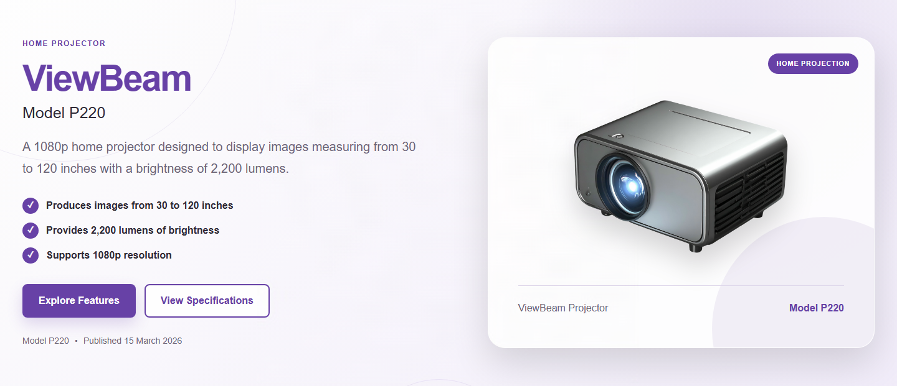
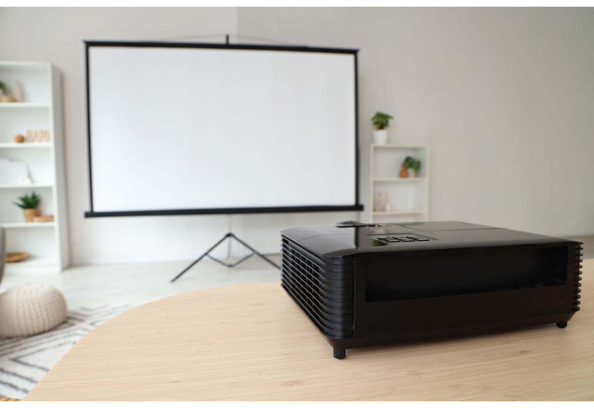

30-to-120-inch projection
The projector supports image sizes ranging from 30 inches to a maximum recommended size of 120 inches.

Credentials applied with: Adobe Content Authenticity
Asset type: PNG image with embedded Content Credentials
Credential location: Embedded in the asset file
Last verification: Passed on 19/11/2026 using Content Credentials Verify
Verify Content CredentialsCredentials applied with: Adobe Content Authenticity
Asset type: PNG image with embedded Content Credentials
Credential location: Embedded in the asset file
Last verification: Passed on 19/11/2026 using Content Credentials Verify
Verify Content CredentialsFlexible home projection
LumaForge ViewBeam P220 is a 1080p projector designed to display images measuring between 30 and 120 inches.
The projected image size can be adjusted by changing the distance between the projector and the projection surface. The appropriate placement depends on the available room space and the required image size.
ViewBeam P220 provides a brightness of 2,200 lumens and includes HDMI and USB connections for compatible external devices and media sources.
Product highlights
ViewBeam P220 combines 1080p resolution, adjustable image sizing and common input connections in a home projector.
The projector supports image sizes ranging from 30 inches to a maximum recommended size of 120 inches.
ViewBeam P220 provides a rated brightness of 2,200 lumens for projected video, images and other compatible content.
The projector produces a 1080p image when used with a compatible source and suitable projection surface.
The HDMI input supports connection to compatible computers, media players and other external video sources.
The USB connection provides an additional option for compatible devices and supported media.

Designed for home viewing
Place ViewBeam P220 on a stable, level surface facing a flat projection area. Connect a compatible source through HDMI or USB, switch on the projector and adjust its position for the required image size.
Change the projector’s distance from the viewing surface to produce an image between 30 and 120 inches.
Connect compatible sources through the available HDMI or USB connection.
View compatible video and image content at 1080p resolution.
Recommended screen size
ViewBeam P220 is designed to produce images measuring between 30 and 120 inches. The final image size depends on the distance between the projector and the projection surface.
Product details
Key product information for the LumaForge ViewBeam P220 projector.

| Product name | ViewBeam |
|---|---|
| Model | P220 |
| Brand | LumaForge |
| Product category | Home projector |
| Recommended image size | 30–120 inches |
| Brightness | 2,200 lumens |
| Resolution | 1080p |
| Video input | HDMI |
| USB connection | Included |
| Product code | LF-P220-2026 |
Getting started
Complete the following steps before and during normal operation.
Place the projector on a stable, level surface facing a flat, clear projection area.
Connect a compatible device or media source through the available HDMI or USB connection.
Switch on the projector and select the input that matches the connected source.
Adjust the projector’s position to produce a clear image between 30 and 120 inches.
Important information
Follow these precautions when operating, cleaning or storing ViewBeam P220.
Switch off the projector and allow it to cool before storage. Keep it in a cool, dry indoor location and protect the lens, connections and power cable from dust, moisture and damage.
Questions and Answers
Find answers about ViewBeam P220, including image size, brightness, resolution and available connections.
ViewBeam P220 is designed to produce projected images measuring between 30 and 120 inches diagonally.
The maximum recommended image size for ViewBeam P220 is 120 inches.
ViewBeam P220 provides a rated brightness of 2,200 lumens.
ViewBeam P220 supports 1080p resolution.
ViewBeam P220 includes HDMI and USB connections for compatible external devices and media sources.
ViewBeam P220 is manufactured and distributed by LumaForge.